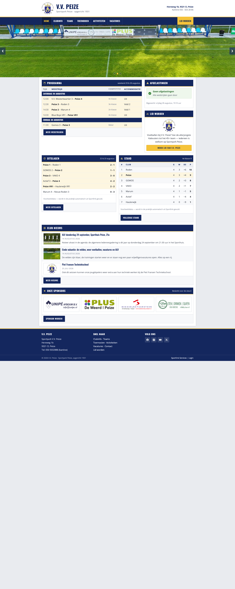

Sportlink-variant
Wat er gratis kan binnen het huidige Club.Website-abonnement: header met logo, clubkleuren, uitslagen- en standenwidgets, sponsorbalk en een echte footer — binnen de beperkingen van het vaste thema.
Bekijk variant
Zelfbouw-variant
De droomversie met volledige designvrijheid: full-width hero, moderne kaarten en typografie. Haalbaar met een eigen WordPress-site plus de Sportlink Club.Dataservice-koppeling.
Bekijk variant
Programma boven de vouw
Zelfde zelfbouw-stijl, maar met het wedstrijdprogramma direct bij binnenkomst in beeld: een compactere hero met de programmakaart ernaast — voor wie op zaterdagochtend snel de aanvangstijd zoekt.
Bekijk variant
Kantinescherm
Full-screen tv-weergave voor in de kantine: de wedstrijden van vandaag met veld- en kleedkamerindeling, live klok en roulerende sponsors. Gevoed door dezelfde Sportlink-data. Opent op tv-formaat (1920×1080).
Bekijk variant